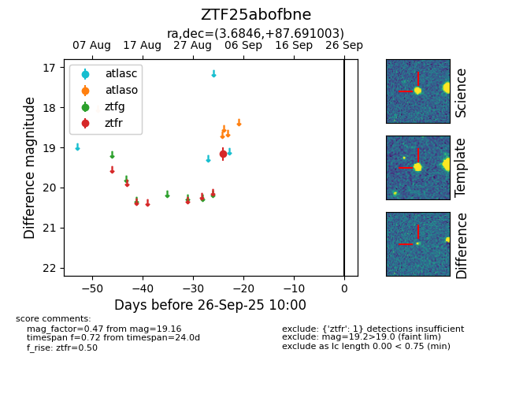

FINK: ZTF25abofbne
Lasair: ZTF25abofbne
ALeRCE: ZTF25abofbne
ZTF25abofbne (ztf,fink)
equatorial (ra, dec) = (3.6846,+87.69100)
galactic (l, b) = (122.5263,+24.84822)

last ztfr=19.16
1 ztfr detections